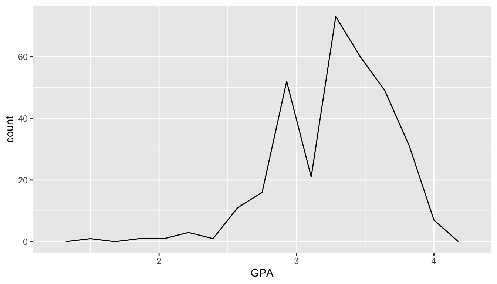
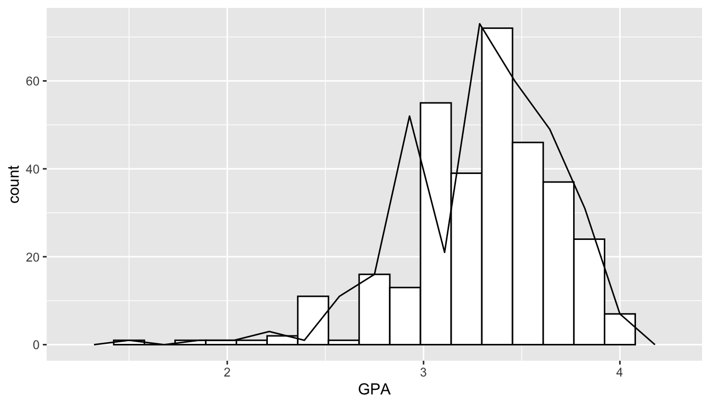
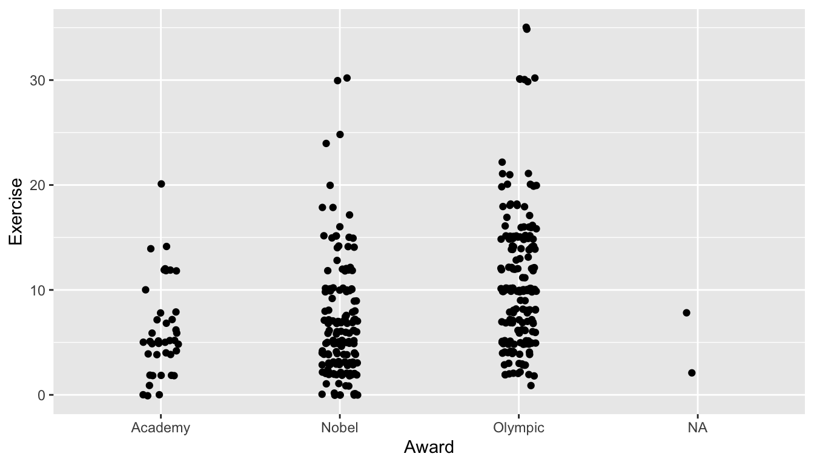
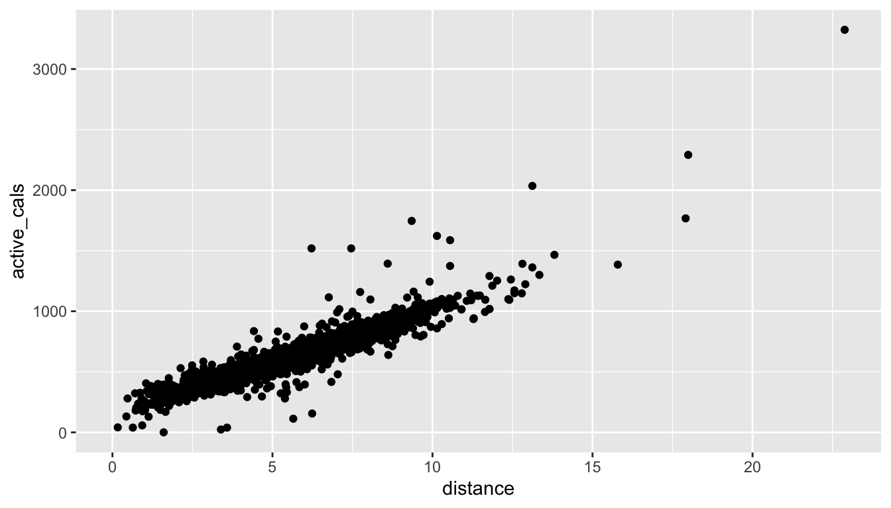
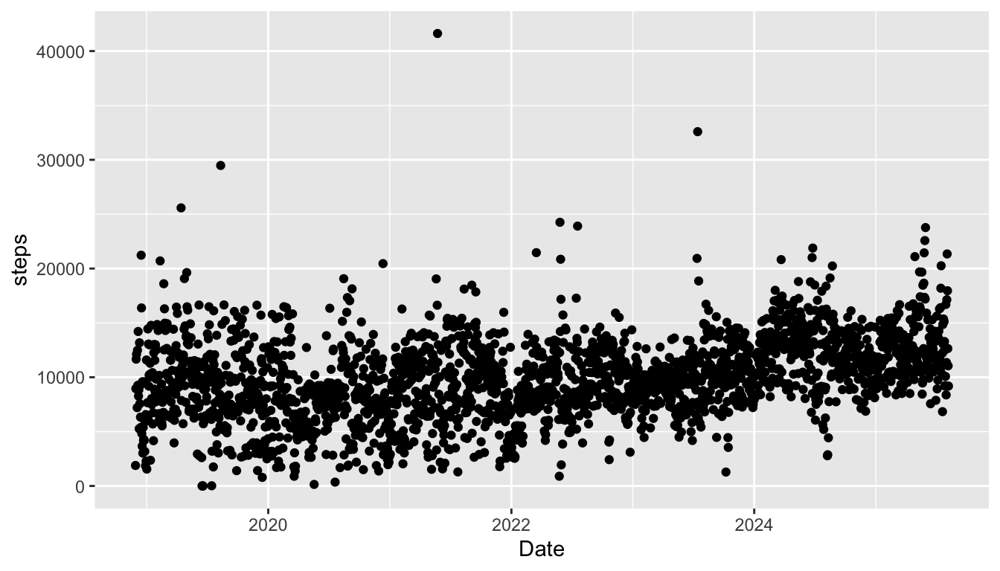
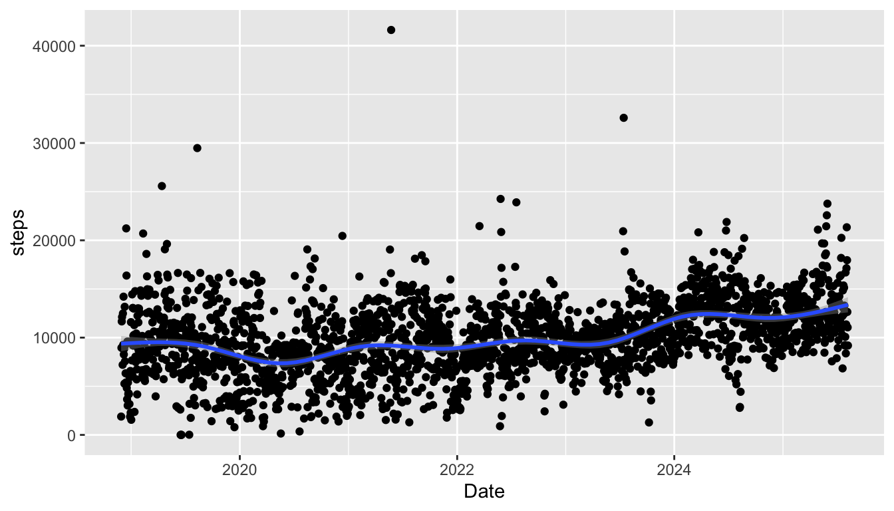
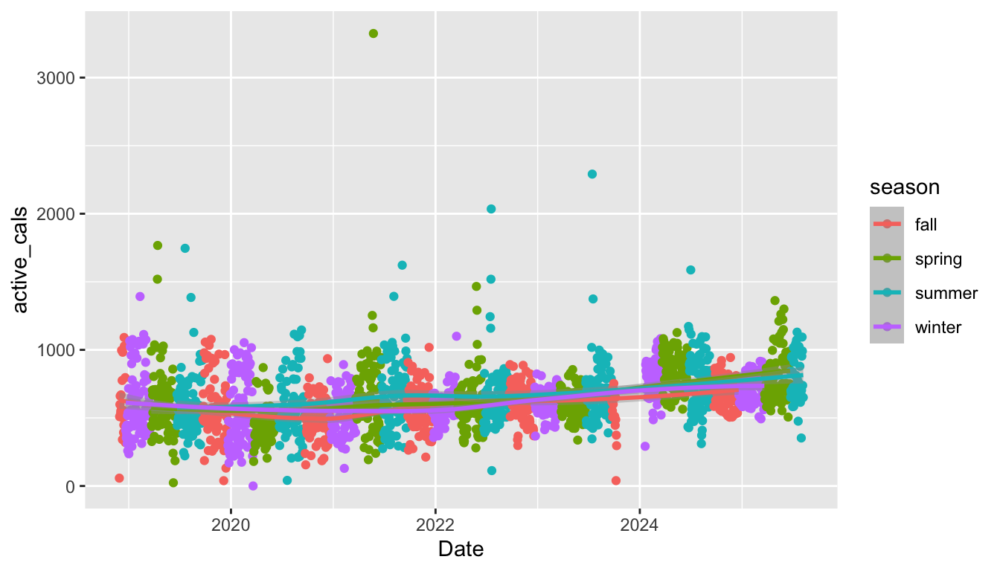
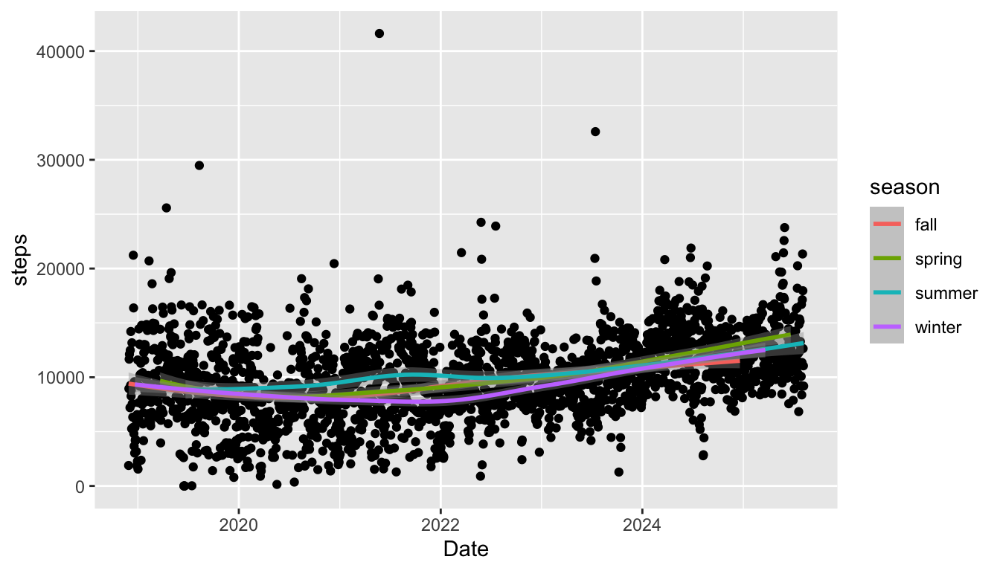

## DO NOT COPY this code into your .qmd file: it will not run.
ggplot(data = name_of_data, aes(x = name_of_x_var,
y = name_of_y_var,
colour = name_of_colour_var,
etc.)) +
geom_nameofgeom() +
.....<other stuff>2 Plotting with ggplot2
Goals:
Use the
ggplot2package to make exploratory plots from STAT 113 of a single quantitative variable, a single categorical variable, two quantitative variables, a quantitative and a categorical variable, two categorical variables, and more than two variables.Further practice running code in
R.
2.1 Introduction and Basic Terminology
We will begin our data science journey with plotting in the ggplot2 package. We are starting with plotting for a couple of reasons:
Plotting is cool! We get to see an immediate result of our coding efforts in the form of a nice-to-look-at plot.
In an exploratory data analysis, you would typically start by making plots of your data.
Throughout the first couple of sections, we will try to go very light on the technical code terminology to start out with (but we will come back to some things later in the semester). The terminology will make a lot more sense once you’ve actually worked with data. But, there are three terms that will be thrown around quite a bit in the next few weeks: function, argument, and object.
a function in
Ris always* (*always for this class) followed by an open(and ended with a closed). In non-technical terms, a function does something to its inputs and is often analogous to an English verb. For example, themean()function calculates the mean, therank()functions ranks a variable from lowest to highest, and thelabs()is used to add labels to a plot. Every function has a help file that can be accessed by typing in?name_of_function. Try typing?meanin your lower left window.an argument is something that goes inside the parentheses in a function. Arguments could include objects, or they might not. In the bottom-left window, type
?meanto view the Help file on thisRfunction. We see thatmean()has 3 arguments:x, which is anRobject,trim, andna.rm.trim = 0is the default, which means that, by default,Rwill not trim any of the numbers when computing the mean.an object is something created in
R, usually with<-. So, in the code below where we read in the STAT 113 survey data set,stat113_dfis anRobject.
Note
This terminology will make more sense as we go through these first couple of weeks and see some examples.
2.2 Basic Plot Structure
We will use the ggplot() function in the ggplot2 package to construct visualizations of data. the ggplot() function has 3 basic components:
- a
dataargument, specifying the name of your data set (pres_dfabove) - a
mappingargument, specifying that specifies the aesthetics of your plot (aes()). Common aesthetics arexposition,yposition,colour,size,shape,group, andfill. - a
geom_ ()component, specifying the geometric shape used to display the data.
The components are combined in the following form:
The structure of ggplot() plots is based on the Grammar of Graphics https://www.springer.com/gp/book/9780387245447. As with most new things, the components above will be easier to think about with some examples.
Throughout this section, we will be using survey data from STAT 113 many years ago for the exercises in this section. For those who may not have taken STAT 113 from having AP credit or another reason, the STAT 113 survey is given to all students in STAT 113 across all sections. Some analyses in Intro Stat are then carried out using the survey.
Create a new Quarto file. Then, read in the data set by copying and pasting the R chunk below into an R chunk in your Quarto file.
The data set contains the following variables:
-
Year, FirstYear, Sophomore, Junior, or Senior -
Sex, M or F (for this data set,Sexis considered binary). -
Hgt, height, in inches. -
Wgt, weight, in pounds. -
Haircut, how much is paid for a haircut, typically. GPA-
Exercise, amount of hours of exercise in a typical week. -
Sport, whether or not the student plays a varsity sport. -
TV, amount of hours spent watching TV in a typical week. -
Award, Award preferred: choices are Olympic Medal, Nobel Prize, or Academy Award. -
Pulse, pulse rate, in beats per minute. -
SocialMedia, most used social media platform (Instagram, SnapChat, FaceBook, Twitter, Other, or None).
2.3 Introduction to Plotting
We will now move into making many of the graphics that you saw in STAT 113. We will also introduce some new types of graphs that you might not have seen before. Throughout the section, we will also introduce some of the syntax used in making these plots so that, by the end, you should be able to construct an entire plot on your own.
2.3.1 Single Quantitative Variable
In STAT 113, you probably used a few graphs to explore a single quantitative variable. We will begin with what is probably the most common graph to use in this situation: the histogram. The following code creates a histogram for the GPA variable in the data set named stat113_df.
ggplot(data = stat113_df, aes(x = GPA)) +
geom_histogram()
We can add some function arguments to geom_histogram() to make the graph a little more pleasing to the eye. For the following histogram, we are changing the colour, fill, and the number of bins of the histogram of GPA:
ggplot(data = stat113_df, aes(x = GPA)) +
geom_histogram(colour = "black", fill = "white", bins = 17)
Let’s note some of the components of the plot:
-
data = stat113_dftellsRwhich data set to use. In this case, we want to use the data set that we read in earlier and namedstat113_df. -
aes(x = GPA)tellsRto map theGPAvariable instat113_dfto thexaxis on the plot. We will come back toaes()(aesthetics) in a bit. -
geom_histogram()tellsRthat we want to use the histogramGEOMto bin the GPA variable and construct the histogram. The extra optionscolour = "black", fill = "white", bins = 17are options for the plot that change thecolour,fill, and number ofbinsin the histogram.
There are other graphs besides a histogram that we can use to visualize a quantitative variable. Another useful graph is a frequency plot, made with the geom geom_freqpoly(). The code to make a frequency plot is given below.
Note
The only thing that changes in the code is the GEOM: the data and the fact that we are mapping GPA to the x-axis remain consistent with the histogram.
ggplot(data = stat113_df, aes(x = GPA)) +
geom_freqpoly(bins = 15)
The frequency plot is just like a histogram but the counts are connected by a line instead of represented with bins. You can see how they relate by including both a geom_freqpoly() and a geom_histogram() in your plot
Important
The code below doesn’t make the prettiest graph but it does show how more complex graphs are built with ggplot(): by continually adding layers to the plot.
ggplot(data = stat113_df, aes(x = GPA)) +
geom_histogram(colour = "black", fill = "white", bins = 17) +
geom_freqpoly(bins = 15)
Exercise 1. Change the variable being plotted in the earlier histogram from GPA to another variable in the data set. Note that the variable must be quantitative. The variable names were given earlier in this section, but you can also see the variable names if you type in stat113_df in your bottom left window. Also, you can run names(stat113_df) in your bottom left window of R Studio to obtain all of the variable names in the stat113_df data frame.
Exercise 2. In the histogram you just created, change the colour of the histogram to be "dodgerblue4" and the fill of the histogram to be "dodgerblue1".
Exercise 3. There are a lot of named colours that you can use in R. After looking through some at http://www.stat.columbia.edu/~tzheng/files/Rcolor.pdf, change the colour and fill of the histogram again to be colours of your choice.
2.3.2 Single Categorical Variable
The most common graph for visualizing a single categorical variable is a bar plot. The following code makes a bar plot with the SocialMedia variable from the STAT 113 survey. Keep in mind that the data is from 2018 - 2019, before the explosion of Tik Tok!
Note the syntax used to create the plot: we still are specifying data, the name of the data set used (stat113_df) and we still are mapping a variable (SocialMedia) to the x axis of the plot. geom_bar() is the GEOM used to create a bar plot.
For a single categorical variable, bar plots are by far the most common plot to make so we won’t discuss any other plots here.
Exercise 4. Choose another categorical variable to plot, and change x = SocialMedia to x = name_of_your_variable.
Exercise 5. geom_bar() also has colour and fill options just like geom_histogram() did. Add these arguments into geom_bar() in the plot you just created. You can choose whichever colours you want for colour and fill!
2.3.3 Two Variables: Both Categorical
To explore the relationship between two categorical variables, we can construct a stacked barplot. Let’s look at the relationship between Year and SocialMedia first using two versions of a stacked bar plot: one stacked bar plot of the raw counts and one stacked bar plot of proportions.
To make a stacked bar plot of raw counts, we map the SocialMedia variable to the fill aesthetic:
Because the number of students from each class are drastically different, it is difficult to read the distribution of SocialMedia preference for the levels of class Year with fewer students (Juniors and Seniors). Changing the y-axis from a count to a proportion of students who prefer that particular SocialMedia within each class year can help mitigate this problem:
ggplot(data = stat113_df, aes(x = Year, fill = SocialMedia)) +
geom_bar(position = "fill") +
labs(y = "Proportion")We will not worry too much about the position = "fill" argument needed to make this change at this point. But, do note that, (1) with the proportion graph, we no longer see the sample size and (2) we’ve added labs(y = "Proportion") to change the y-axis label of the graph.
Exercise 6. Change both the x and fill variables to be two other categorical variables from the STAT 113 data set. Your new plot can either be of the raw counts or of the proportion. Write a one sentence interpretation of any findings from your new plot.
2.3.4 Two Variables: One Cat. and One Quant.
If we are interested in exploring the relationship between a categorical variable and a quantitative variable, side-by-side boxplots can be useful. Let’s stick with the STAT 113 survey data to examine the relationship between Exercise, the amount of exercise in hours per week and Award preference.
ggplot(data = stat113_df, aes(x = Award, y = Exercise)) +
geom_boxplot()
Note
Again, examine the consistency in the syntax: we specify data to be the name of the data set, we map Award to the x axis, Exercise to the y axis, and we provide a relevant GEOM, geom_boxplot().
Alternatively, we can make side-by-side violin plots.
ggplot(data = stat113_df, aes(x = Award, y = Exercise)) +
geom_violin()
The violin plots are similar to boxplots, but are wider in areas that generally have more data.
A third common option is what is known as a strip plot, given below:
ggplot(data = stat113_df, aes(x = Award, y = Exercise)) +
geom_jitter(width = 0.10)
The geom_jitter() GEOM adds a little bit of “noise” to the points that are plotted. In this case, the noise is added to the width and how much noise is added depends on the value of the width argument.
Important
One big advantage of a strip plot over a side-by-side boxplots and violin plots is that we can get a rough idea about the sample size in each group in the strip plot.
Exercise 7. Change the side-by-side violin plot to be of a different quantitative variable and a different categorical variable from the stat113_df data frame. Write a one sentence interpretation about any findings from your new plot.
Exercise 8. To your violin plot in the previous exercise, change the default colour and fill arguments to be two different colours of your choice.
2.3.5 Two Quantitative Variables
For this, we will work with some fitness data collected from my Apple Watch since November 2018. The higham_fitness_clean.csv contains information on the following variables:
-
Start, the month, day, and year that the fitness data was recorded on -
month, the month -
weekday, the day of the week -
dayofyear, the day of the year (so that 304 corresponds to the 304th day of the year) -
distance, distance walked in miles -
steps, the number of steps taken -
flights, the number of flights of stairs climbed -
active_cals, the number of calories burned from activity -
stepgoal, whether or not I reached 10,000 steps for the day -
weekend_ind, a variable for whether or not the day of the week was a weekend day (Saturday or Sunday) or a weekday (Monday - Friday).
Read in the data set by putting the following code into an R chunk in your Quarto file:
By far, the most common plot to visualize the relationship between two quantitative variables is the scatterplot, which is made with the geom_point() GEOM. Again, in the following code, try to note the similarities in syntax with the previous plots: we still specify the data frame that we are using, and we still map variables in that data frame to aesthetics on the plot.
In the following scatterplot, the variable distance is the x-variable and active_cals is the y-variable.
ggplot(data = fitness_full, aes(x = distance, y = active_cals)) +
geom_point()
Exercise 9. Do you see anything “odd” about the plot? Make a note of any strange observations that you see.
Hint
In particular, what about having 0’s for either distance or active_cals could indicate a flaw in how the data was collected?
Exercise 10. Change the x and y variables plotted to two different quantitative variables in the fitness data set. Give a one sentence interpretation of any findings from your new plot.
Hint
Recall from STAT 113 that three aspects you might think about are the strength of the relationship (weak, moderate, strong), whether or not the relationship is linear, and the direction of the relationship (positive or negative)
2.3.6 More Than Two Variables
When constructing a graph involving more than two variables, there are two commonly used strategies: (1) Use another plot aesthetic for the third variable (most commonly a colour aesthetic) and (2) Facet by the third variable.
First, in addition to x and y aesthetics, we can also use aes() to map variables to things like colour, size, and shape. For example, using the STAT 113 data set again, we might make a scatterplot with Wgt on the x-axis and Hgt on the y-axis, and use the colour aesthetic for the Sex of the student. In this older version of the STAT 113 survey there are only two levels of Sex in the data: M and F.
ggplot(data = stat113_df, aes(x = Wgt, y = Hgt, colour = Sex)) +
geom_point()
Colour is the most popular aesthetic, but other aesthetics include shape (if the third variable is categorical) and size (if the third variable is quantitative). Neither of these are particularly useful for this example but examples of using each are given in the next code chunk.
ggplot(data = stat113_df, aes(x = Wgt, y = Hgt, shape = Sex)) +
geom_point()ggplot(data = stat113_df, aes(x = Wgt, y = Hgt, size = Exercise)) +
geom_point()A second option for including a third variable in a plot is to facet by that variable using the facet_wrap() function. The syntax of facet_wrap() is facet_wrap(~ name_of_faceting_variable).
Important
Faceting creates a subplot for each level of the variable that you choose to facet by.
For example, in the following plot, we make a scatterplot of Hgt vs. Wgt and facet by Year. This makes 4 subplots: one for each class Year:
ggplot(data = stat113_df, aes(x = Wgt, y = Hgt)) +
geom_point() +
facet_wrap(~ Year)
In general, the more levels of the variable there are, the more useful faceting is compared to using a colour aesthetic. We will explore this idea more in the Exercises.
Exercise 11. In the fitness_full data, construct a scatterplot of two of the quantitative variables and facet by one of the categorical variables.
2.4 Practice
In general, practice exercises will be split between exercises that will be done together as a class and exercises that you will do in groups or on your own. The purpose of the class exercises is to give some guidance on how we might think logically through some of the code and the results. The purpose of the group exercises and the on your own exercises is so that you have a chance to practice what you’ve learned with your table or on your own.
2.4.1 Class Exercises
Class Exercise 1. As we progress through the semester, we will pay close attention to the way that our data set is structured. In the earlier bar plot that we made of the SocialMedia variable from the stat113_df data frame, we had a column called SocialMedia where each row represented a student. geom_bar() then counts up the total number of times each level appears to make the bar plot.
However, sometimes, data are in format such that one column contains the levels of the categorical variable while another column contains the counts directly. For example, we can create such a data set using code that we will learn next week and name it stat113_restructured:
Suppose that you attempted to make a bar plot of
SocialMediawithstat113_restructuredusinggeom_bar(). Predict what the plot will look like.Construct the plot described in (a) to test your prediction.
When the data is structured such that there is a column that uniquely gives the levels of the categorical variable and a second column that gives the count of each level, we typically use the
geom_col()GEOMinstead ofgeom_bar().geom_col()uses both anxand ayaesthetic mapping. Construct the bar plot usingstat113_restructuredwith thegeom_col()GEOM.
Class Exercise 2. To the scatterplot of distance vs. active calories, add a smoother with the geom_smooth() GEOM. After adding the smoother, investigate the following arguments: (1) method, (2) se, and (3) span.
Hint
You can investigate the arguments either by typing ?geom_smooth in your lower left window or by using Google or ChatGPT.
Class Exercise 3. Another useful GEOM for some types of quantitative variables is geom_line(), which is often used if the x-axis variable is time. Construct a line plot with the fitness_full data to look at how steps changes through time.
Class Exercise 4. Thus far, we have only faceted by a single variable. With the stat113_df data frame, figure out (with the help of Google) how to facet by two variables to make a plot that shows the relationship between GPA (y-axis) and Exercise (x-axis) with four facets: one for male students who play a sport, one for female students who play a sport, one for male students who do not play a sport, and one for female students who do not play a sport.
Class Exercise 5. In STAT 113, boxplots are typically introduced using the * symbol to identify outliers. Using a combination of the help ?geom_boxplot and Googling “R point shapes”, figure out how to modify your side-by-side boxplots so that the outliers are shown using *, not the default dots.
Class Exercise 6. We can change the y-axis of a histogram to be “density” instead of a raw count. This means that each bar shows a proportion of cases instead of a raw count. Google something like “ggplot2 geom_histogram with density” to figure out how to create a y aes() to show density instead of count.
2.4.2 Your Turn
Your Turn 1. Suppose that you ask each student in this class the following question: Is your major Statistics, Data Science, or Other. You now want to make a bar plot of your hypothetical data. In pairs, have one person complete part (a) and the second person complete part (b).
Sketch out (with pen and paper) how the data would be structured if you were to use
geom_bar()to make a bar plot of theMajorvariable.Sketch out (with pen and paper) how the data would be structured if you were to use
geom_col()to make a bar plot of theMajorvariable.
Your Turn 2. With a partner, decide on two quantitative variables and one categorical variable from the STAT 113 data set that you are interested in exploring. Have one person complete part (a) and the second person complete part (b).
Make a scatterplot that colours the points by the categorical variable.
Make a set of faceted scatterplots (that are faceted by the levels of the categorical variable).
With your partner, decide which of the two graphs is “better” for exploring the three variables and why.
Your Turn 3. Repeat the previous exercise with your partner with different variables, but switch parts (so that you will work on (a) if you previously worked on (b) and vice versa).
Your Turn 4. Besides strip plots, boxplots, and violin plots, we can also make coloured frequency plots or faceted histograms if we are interested in exploring the relationship between a quantitative variable and a categorical variable. With a partner, decide on one quantitative and one categorical variable that you wish to explore from the fitness_full data set. Have one person complete part (a) and the second person complete part (b).
Make a coloured frequency plot of the variables you selected (colouring by the levels of the categorical variable).
Make a set of faceted histograms (faceting by the categorical variable that you selected).
Your Turn 5. In your group, discuss why it would not make sense to construct a line plot of Exercise vs. GPA from the stat113_df data set.
Hint
What about the GPA variable in particular would make construction of a line plot impossible?
Your Turn 6. In your group, discuss why you think R gives us a warning message that it “Removed 70 rows containing non-finite values” whenever we make a plot of the GPA variable from stat113_df.
Your Turn 7. On your own, construct a plot of your choosing, with any variables from either of the data sets we have used so far! Give a one sentence interpretation of your findings from your plot.
Your Turn 8. A common theme that we’ll see throughout the course is that it’s advantageous to know as much background information as possible about the data set we are analyzing. Data sets will be easier to analyze and pose questions about if you’re familiar with the subject matter.
In your group, give an example of something that you know about STAT 113 and the survey data set that helped you answer or pose a question that someone from another university (and therefore unfamiliar with our intro stat course) wouldn’t know.
In your group, give an example of something that you don’t know about the fitness data set that the person who owns the fitness data would know. Why does that give an advantage to the person who is more familiar with the fitness data?
2.5 Aesthetic Mapping in ggplot
Goals:
- further use
ggplot2to construct plots of data - explain how aesthetics are used in
ggplot()and describe the difference between local and global aesthetics.
The purpose of this second section on ggplot2 is to discuss more about plot aesthetics. While the previous section focused more on basic plot construction, this section will focus more on how the plots are constructed by what is specified in the aes() mapping argument.
Important
The aesthetic mappings are what map variables in the data frame we are using to characteristics of the plot.
Which aesthetic mappings are available depend on the GEOM used. Common mappings include x, y, colour, fill, size, shape, and linewidth.
However, colour, fill, size, shape, and linewidth are also things that we commonly change outside of aesthetic mappings. Details of when to put an argument inside of aes() or outside of aes() are discussed next.
2.5.1 Inside vs. Outside aes()
Examine the following graph of some of the variables in the fitness data set we used in the previous section.
library(tidyverse)
fitness_full <- read_csv("https://raw.githubusercontent.com/highamm/ds234_quarto/main/data_online/higham_fitness_clean.csv",
col_types = list(stepgoal = col_factor())) |>
mutate(weekend_ind = case_when(weekday == "Sat" | weekday == "Sun" ~ "weekend",
TRUE ~ "weekday"))
ggplot(data = fitness_full,
aes(x = Start, y = active_cals, colour = stepgoal)) +
geom_point()
Here, we have used a colour aesthetic to map the stepgoal variable to colour. But, what if we wanted to simply colour all of the points "blue". Try running:
ggplot(data = fitness_full,
aes(x = Start, y = active_cals, colour = "blue")) +
geom_point()
What does the graph look like? Did it do what you expected? To actual colour the points "blue", we need to specify colour = "blue" outside of aes() because "blue" is not a variable from the fitness_full data frame. Also, when giving non-aesthetic characteristics to a plot, the argument must go with the associated GEOM; so, colour = "blue" must be an argument to geom_point():
ggplot(data = fitness_full,
aes(x = Start, y = active_cals)) +
geom_point(colour = "blue")
To sum up, putting colour = ____ inside aes() or outside aes() achieves different things. In general,
when we want to map something in our data set (
fitness_full) to something in our plot (x,y,colour,size, etc.), we put that inside theaes()as inaes(colour = weekend_ind).When we assign fixed characteristics (making all points a larger size, widening the width of a line, using a constant colour, etc.) that don’t come from the data, we put them outside of
aes().
Note
We actually have already used non-aesthetic options in ggplot(), though we did not frame them as non-aesthetic options at the time. In the previous section, we often changed the colour option and fill option to histograms, bar plots, and box plots. These are non-aesthetic options because, again, we are not mapping a variable in the data frame to these arguments.
Exercise 1. The default point size is 1.5 while the default point shape is 19. In the following plot, change the defaults so that the points are a little larger than the default and so that the shape is an X. Google image search “R point shapes” to figure out which integer corresponds to the X point shape.
ggplot(data = fitness_full,
aes(x = Start, y = active_cals)) +
geom_point(size = 1.5, shape = 19)
Exercise 2. Use the linewidth option in geom_smooth() to increase the width of the smoother. Note that the default linewidth is 1.
ggplot(data = fitness_full,
aes(x = Start, y = active_cals)) +
geom_point() +
geom_smooth()
2.5.2 Local vs. Global Aesthetics
Up until this point, we have always supplied aesthetics globally in the ggplot() function. However, there are times when we must override the global aesthetics and change the locally within an individual GEOM.
In the following plot, the global aesthetics x, y, and colour are passed to all further GEOMs (geom_point() and geom_smooth() in this case) unless specifically overridden. So, the plot with global aesthetics
ggplot(data = fitness_full,
aes(x = Start, y = active_cals, colour = stepgoal)) +
geom_point() +
geom_smooth()
is equivalent to the following plot with local aesthetics:
ggplot(data = fitness_full) +
geom_point(aes(x = Start, y = active_cals, colour = stepgoal)) +
geom_smooth(aes(x = Start, y = active_cals, colour = stepgoal))
Important
As our plots become more complex, we will need to think carefully about whether we want to supply an aesthetic globally or locally. As an example, we can change which aesthetics are supplied globally and which are supplied locally to create a graph that has the points coloured by stepgoal but a single smoother and a graph that has smoothers for each level of stepgoal but a single point colour:
ggplot(data = fitness_full,
aes(x = Start, y = active_cals)) +
geom_point(aes(colour = stepgoal)) +
geom_smooth()
ggplot(data = fitness_full,
aes(x = Start, y = active_cals)) +
geom_point() +
geom_smooth(aes(colour = stepgoal))
Exercise 3. Modify the following plot so that the aesthetics are all explicitly given locally to each GEOM instead of globally.
ggplot(data = fitness_full,
aes(x = Start, y = active_cals)) +
geom_point() +
geom_line()
2.5.3 R Code Style
We want our code to be as readable as possible. This not only benefits other people who may read your code (like me), but it also benefits you, particularly if you read your own code in the future. I try to follow the Style Guide in the Advanced R book: http://adv-r.had.co.nz/Style.html. Feel free to skim through that, but you don’t need to worry about it too much: you should be able to pick up on some important elements just from going through this course. You might actually end up having better code style if you haven’t had any previous coding experience.
As a quick example of why code style can be important, consider the following two code chunks, both of which produce the same graph.
ggplot(data=fitness_full,aes(x=Start,y=steps))+geom_point(colour=
"darkgreen")+geom_smooth(se=FALSE,colour="black",linewidth=1.4)ggplot(data = fitness_full,
aes(x = Start, y = steps)) +
geom_point(colour = "darkgreen") +
geom_smooth(se = FALSE, colour = "black", linewidth = 1.4)Which code chunk would you want to read two years from now? Which code chunk would you want your classmate/friend/coworker to read? (assuming you like your classmate/friend/coworker….)
Exercise 4. Fix the following code so that the code is more readable.
ggplot(data =fitness_full,
aes(x =weekday,y= steps)) +geom_boxplot(fill="coral1",colour ="black")
Exercise 5. Read the very short paper at https://joss.theoj.org/papers/10.21105/joss.01686 on an Introduction to the tidyverse, and answer the questions below in your Quarto file. Answer the following questions by typing answers in your .qmd document. Because these answers do not involve code, you should be able to type them into your .qmd document outside of a code chunk.
What are the two major areas that the
tidyversedoesn’t provide tools for?How do the authors define “tidy”?
What does it mean for the
tidyverseto be “human-centred”?In about 2 sentences, describe the data science “cycle” given in the diagram at the top of page 3.
2.6 Practice
In general, practice exercises will be split between exercises that will be done together as a class and exercises that you will do in groups or on your own. The purpose of the class exercises is to give some guidance on how we might think logically through some of the code and the results. The purpose of the group exercises and the on your own exercises is so that you have a chance to practice what you’ve learned with your table or on your own.
For some of these exercises we will again use the stat113_df data, described in the previous section.
stat113_df <- read_csv("https://raw.githubusercontent.com/highamm/ds234_quarto/main/data_online/stat113.csv")
head(stat113_df)
#> # A tibble: 6 × 12
#> Year Sex Hgt Wgt Haircut GPA Exercise Sport TV Award Pulse
#> <chr> <chr> <dbl> <dbl> <dbl> <dbl> <dbl> <chr> <dbl> <chr> <dbl>
#> 1 Sophomore M 66 155 0 2.9 15 Yes 8 Olymp… 72
#> 2 FirstYear F 69 170 17 3.87 14 Yes 12 Olymp… 51
#> 3 FirstYear F 64 130 40 3.3 5 No 5 Olymp… 68
#> 4 FirstYear M 68 157 35 3.21 10 Yes 15 Olymp… 54
#> 5 FirstYear M 72 175 20 3.1 2 No 5 Nobel NA
#> 6 Junior F 62 150 50 3.3 8 Yes 5 Olymp… 86
#> # ℹ 1 more variable: SocialMedia <chr>2.6.1 Class Exercises
Class Exercise 1. With the stat113_df data, make a scatterplot of Hgt on the y-axis and Wgt on the x-axis, colouring by Sport. Add a smooth fitted curve to your scatterplot. Then, move colour = Sport from an aes() in the ggplot() function to an aes() in the geom_point() function. What changes in the plot? Can you give an explanation as to why that change occurs?
Class Exercise 2. Fix the following plot so that the fill colour of the histogram is "white" and the outline colour is "black".
ggplot(data = stat113_df, aes(x = TV)) +
geom_histogram(aes(colour = "black", fill = "white"))
2.6.2 Your Turn
Your Turn 1. Suppose you have a generic data frame named toy_df, with quantitative variables xvar and yvar, and categorical variable groupvar. In your group, select which of the following plots will result in a scatterplot of xvar and yvar where there are separate coloured fitted linear regression line for each level of groupvar but all of the points are coloured "purple". You may select one, more than one, or none at all.
## a
ggplot(data = toy_df, aes(x = xvar, y = yvar, colour = groupvar)) +
geom_point(colour = "purple") +
geom_smooth(aes(method = "lm"))
## b
ggplot(data = toy_df, aes(x = xvar, y = yvar, colour = groupvar)) +
geom_point(colour = "purple") +
geom_smooth(method = "lm")
## c
ggplot(data = toy_df, aes(x = xvar, y = yvar)) +
geom_point(aes(colour = "purple")) +
geom_smooth(method = "lm", colour = groupvar)
## d
ggplot(data = toy_df, aes(x = xvar, y = yvar)) +
geom_point(colour = "purple") +
geom_smooth(method = "lm", colour = groupvar)
## e
ggplot(data = toy_df, aes(x = xvar, y = yvar)) +
geom_point(colour = "purple") +
geom_smooth(method = "lm", aes(colour = groupvar))
## f
ggplot(data = toy_df, aes(x = xvar, y = yvar)) +
geom_point(aes(colour = "purple")) +
geom_smooth(method = "lm", aes(colour = groupvar))Your Turn 2. Choose one of the plots that you selected as “correct” in the previous exercise. In your group, discuss, how the syntax of the plot would change if all aesthetics were supplied locally instead of globally? Based on this discussion, when are global aesthetics more useful than local aesthetics?